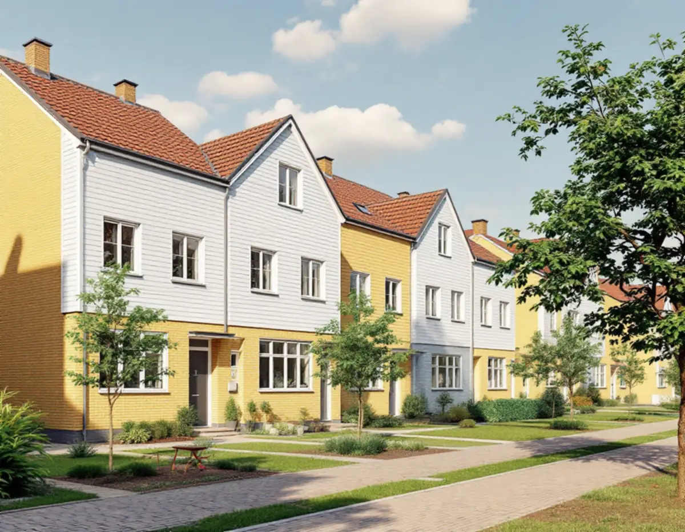
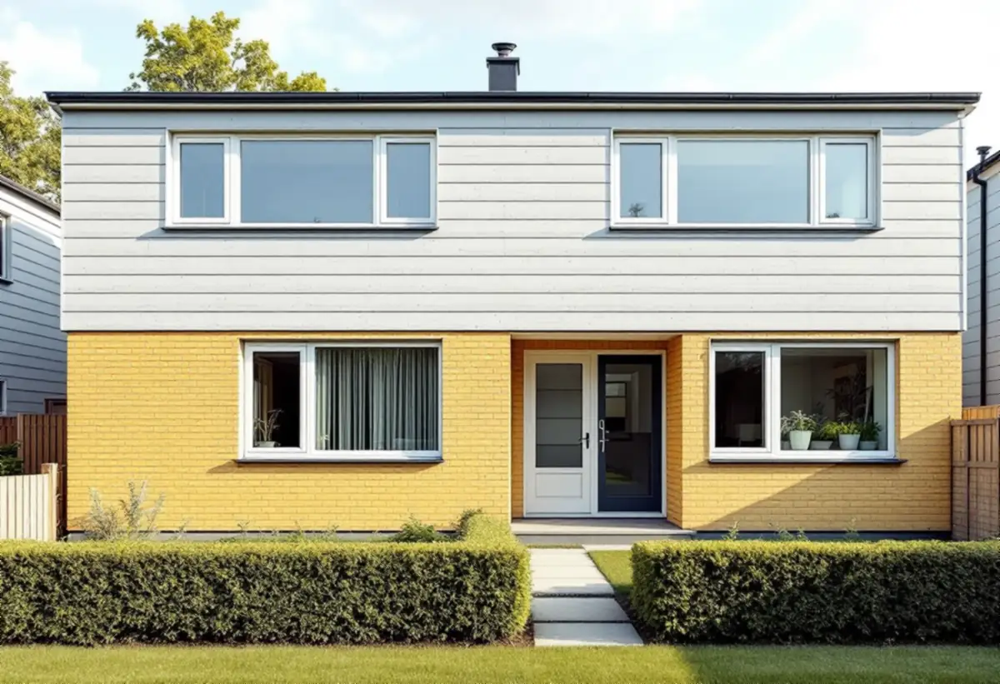
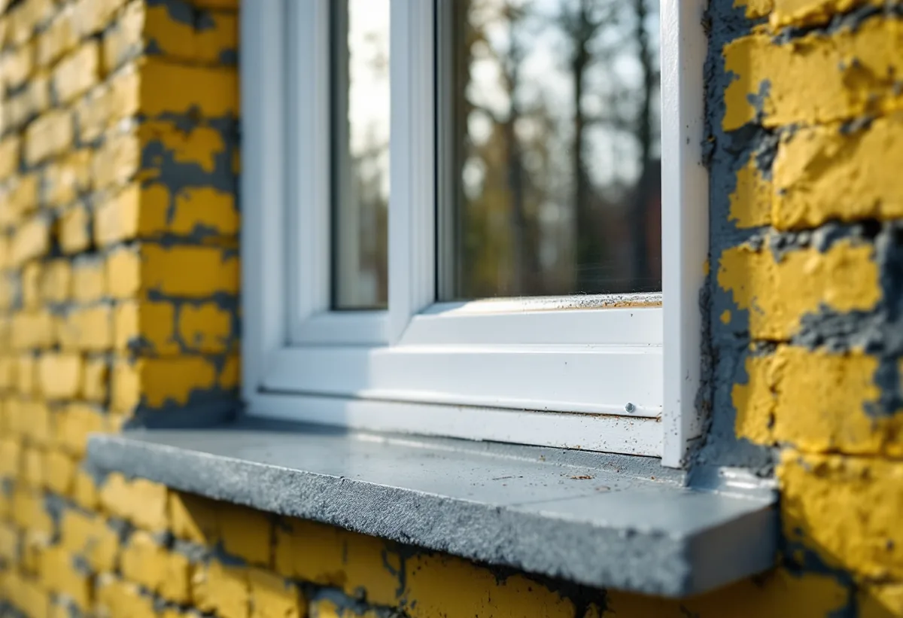

Platsbesök
Vi mäter fönstren och fotograferar grannhusen.
Radhusen i Sätra, Bredäng, Vårberg och Skärholmen byggdes i grupper där husen var nästan identiska. När ett hus i gruppen får nya fönster märks det direkt. Geal Entreprenad AB byter fönster i småhus i Skärholmens stadsdelsområde och föreslår fönster som passar både huset och grannhusen.

Stadens vägledning Varsam utveckling av småhus- och villaområden berättar att Bredäng var den första stadsdelen som planerades i stor skala. Bygget började 1962, och sedan följde Sätra. En stor andel av miljonprogrammets bebyggelse bestod av gruppbyggda småhus och radhus. Vägledningen beskriver dem som radhus, kedjehus, villor och atriumhus, uppförda på små tomter och med mycket enhetlig utformning inom varje grupp.
Fasaderna blandade tegel, trä och skivor, och färgsättningen var noga komponerad och lika inom husgruppen. För ett fönsterbyte betyder det att karmens kulör, bågarnas indelning och blecken helst ska stämma med grannhusens. Det är också det första vi tittar på vid platsbesöket. Vägledningen nämner dessutom att nivåskillnader ofta tas upp med en souterrängvåning, så ett radhus kan ha fönster på olika höjd mot gatan och mot trädgården. Vi mäter därför varje fasad för sig.

Stadens områdesfakta för 2025 visar att småhusen i stadsdelsområdet till största delen ägs med äganderätt. Vårberg har 580 småhus, varav 577 med äganderätt. I Skärholmen är det 543 av 551, i Sätra 536 av 538 och i Bredäng 320 av 322. Flerbostadshusen domineras i stället av hyresrätter: i Bredäng finns till exempel 3 037 hyresrätter hos privata värdar och 973 i allmännyttan, men bara 722 bostadsrätter.
Eftersom nästan alla radhusägare äger sitt hus beställer de också fönsterbytet själva. Ibland vill flera grannar byta samtidigt, och då kan vi mäta upp hela längan på en gång så att fönstren blir likadana. Den som hellre vill rusta de gamla bågarna kan läsa om fönsterrenovering i Skärholmen.
I tabellen i slutet av vägledningen är Bredäng markerat som kulturhistoriskt värdefull miljö. Skärholmen, Sätra och Vårberg har ingen sådan markering. Vägledningen skriver att några av de storskaliga stadsdelarna är klassificerade som kulturhistoriskt värdefulla och att förändringar där behöver visa hänsyn till de värdena.
Stockholms stad skriver att du behöver söka bygglov för åtgärder som annars är lovbefriade om huset ligger i ett område som är utpekat som särskilt kulturhistoriskt värdefullt. Vi kontrollerar därför Stadsmuseets klassificeringskarta och detaljplanen för ditt hus innan vi föreslår nya fönster med en annan indelning eller färg. Vägledningen skriver också att mindre tillbyggnader, till exempel inglasade uterum, är vanliga i de här områdena, och glaspartiet i ett sådant uterum kan bytas i samma veva.
Staden räknar bland annat nytt material eller ny kulör, en annan storlek eller placering, andra profiler på karm, båge och spröjs, en annan upphängning och en ändrad indelning som ändringar av fönster. För ett radhus där grannarnas fönster är likadana syns sådana ändringar tydligt i längan.
Vi brukar därför föreslå fönster som har samma luftindelning och upphängning som originalen, men med nyare glas. Vill du ändra mer går vi igenom vad det kan kräva innan något beställs. Staden påpekar också att nya fönster kan ge ökad insyn hos grannarna och att nya öppningar kan påverka den bärande konstruktionen. I ett radhus med tunna mellanväggar mot grannen är det två skäl att planera noga. Mer om tjänsten finns under fönsterbyte.

Vi mäter fönstren och fotograferar grannhusen.
Detaljplan och Stadsmuseets karta.
Samma indelning och kulör som husgruppen.
Fönster efter uppmätning.
Byte, tätning, foder och nya bleck.
Vi går igenom fönstren och skötseln.
För ett radhus eller en villa med äganderätt räknar Skatteverket det som rotarbete att reparera eller byta ut fönster, montera isolerglas och byta fönsterbleck. Är huset yngre än fem år får arbetet bara återställa det ursprungliga skicket.
Avdraget är högst 30 procent av arbetskostnaden och högst 50 000 kronor per person och år. Material och resor ger inget avdrag, och Geal drar avdraget direkt på fakturan.
Antal fönster och fönsterdörrar, storlek och indelning, glas och beslag, nya bleck och foder och om flera hus i längan byter samtidigt. Efter ett gratis platsbesök får du ett skriftligt kostnadsförslag.
Byta eller renovera fönster.
Fönsterbyte i Stockholm →Takbyte, takbesiktning och plåtarbeten.
Takläggare i Skärholmen →Radhus i grupper i Bredäng, Sätra och Vårberg.
Takrenovering i Skärholmen →Radhustomterna och grannarna.
Attefallshus i Skärholmen →Radhusen, källarplanet och golvbrunnen.
Badrumsrenovering i Skärholmen →Hela ombyggnaden av radhuset.
Byggföretag i Skärholmen →Radhusen från 60- och 70-tal.
Fasadmålning i Skärholmen →Fasader på radhus och kedjehus.
Fasadrenovering i Skärholmen →Miljonprogrammets radhus.
Fönsterrenovering i Skärholmen →Nya golv i radhus och lägenheter.
Golvläggare i Skärholmen →Parkett och lamellgolv från 1960-talet.
Golvslipning i Skärholmen →1960-talskök, bostadsrätt och radhus.
Köksrenovering i Skärholmen →Lägenheter, trapphus och radhus.
Målare i Skärholmen →Rännor och stuprör i sluttningarna.
Plåtslagare i Skärholmen →Altan, plank och förråd vid radhuset.
Snickare i Skärholmen →Egna radhus i Sätra, Bredäng och Vårberg.
Takbyte i Skärholmen →Ny tapet i hyresrätt och bostadsrätt.
Tapetsering i Skärholmen →Radhusen, uterum och skärmtak.
Tillbyggnad i Skärholmen →Renovera hela huset eller lägenheten.
Totalrenovering i Skärholmen →